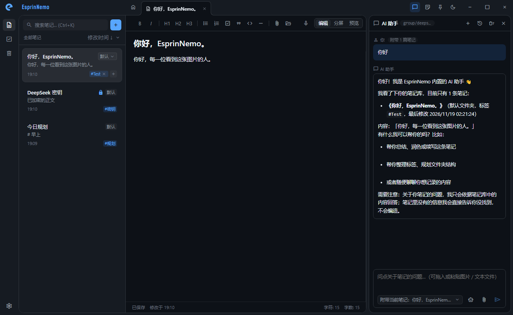
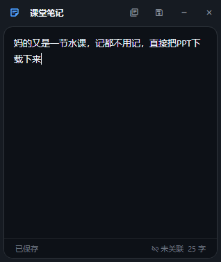
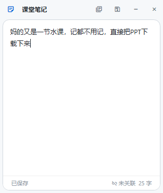

做好一个笔记，
而非其他。
EsprinNemo 把笔记与待办写成 Markdown，标题、文件夹、标签、置顶与废纸篓状态以内嵌注释放在文件开头。 打开就能写，不需要设置向导；想带走时，复制一个目录就够了。


数据先于界面
没有索引文件，没有私有格式，没有需要导出的步骤。
一个条目就是一个 .md 文件
数据目录里只有 items/<id>.md、config.json 与少量对话记录。
标题、标签、置顶这些状态写在文件开头的注释里，正文是干净的 Markdown。用 VS Code、Obsidian 或记事本打开，看到的都是同一份内容。
- 用任意编辑器直接改，改完回到应用里就是最新状态
- 整目录复制即完成迁移，换机器不用导出导入
- 同步与本地是同一份文件格式，不存在「导出后的样子」
<!--EsprinData
type: "note"
title: "季度复盘"
folder: "工作"
tags: ["复盘", "计划"]
isPinned: false
isTrashed: false
createdAt: 1794936683215
updatedAt: 1794936767664
-->
把这一季的关键决策整理一遍，
重点是同步的删除语义。
打开即写
没有第一次运行向导，没有必填项，也没有需要理解的概念。
-
笔记与待办
两者共用一个数据目录、一个废纸篓。待办多一个勾选状态，其余完全一致。
-
浏览器式标签
同时打开多篇，活动标签与编辑器连成一片。拖动可重排，关闭不影响文件。
-
即时搜索
Ctrl + K 聚焦搜索框，标题、正文与标签一起匹配，输入即筛选。
-
外观
浅色 / 深色 / 跟随系统，主题色与四档圆角可调，界面与文档字体分别设置。
-
常驻与便利贴
托盘驻留后台，关窗不退出；桌面便利贴贴在窗口之下，小本本随时记一句。


小本本，记一句就走
标题栏一键唤出屏幕右下角的小窗口，始终置顶。自动保存，不需要想放在哪个文件夹。 底部一直显示状态：存了没有、有没有关联笔记、写了多少字。
- 未关联时内容属于小本本自己，保存即在后台新建一篇笔记并关联
- Ctrl + O 搜索并打开已有笔记，此后改的就是那一篇
- 小本本开着时关掉主窗口不会退出应用，主窗口只是收起
同步是可选项
需要它时才配置，不需要时一个字节都不上传。
自建服务端，操作日志模型
同步端在自己的机器或服务器上运行，客户端与它通信时才联网。 它记录的是操作日志而不是文件快照。删除是一条明确的墓碑，别的设备不会把删掉的内容补回来。
- 删除有明确语义，不会在多设备之间「复活」
- 团队笔记共享的是同一篇，正文不复制，双方改的是同一份
- 服务器地址、账户与令牌都只在你自己手里
# 默认监听 127.0.0.1:8686，数据写在 ./data bun run start:sync # 或手动指定地址、端口与数据目录 bun src/sync/server.js \ --host 0.0.0.0 --port 8686 --data ./esprin-data # 也可以在管理后台 /admin 里配置账户与令牌
诚实的能力边界
做不到的地方直接说明，不摆出假象，也不静默降级。
- 桌面便利贴不提供 Linux 版 置底依赖 Win32 与注册表；Linux 上入口与设置项隐藏，其余功能不受影响。
- 界面目前只有中文 英语支持尚未接入，不做「即将支持」的承诺。
- AI 助手需要自备 Key 兼容 OpenAI 协议的接口，默认关闭以外的能力都要手动配置。
- 没有账号体系 也就不存在找回密码、云端备份与跨设备登录这类服务。
快捷键
手不离键盘，也能把日常写完。
| 按键 | 作用范围 | 功能 |
|---|---|---|
| Ctrl + N | 主窗口 | 新建笔记 |
| Ctrl + Shift + N | 主窗口 | 新建待办 |
| Ctrl + K | 主窗口 | 聚焦搜索框 |
| Ctrl + S | 主窗口 | 保存当前笔记或待办 |
| Ctrl + Tab | 主窗口 | 在打开的标签之间切换 |
| Ctrl + S | 小本本 | 新建并关联，或保存回关联的笔记 |
| Ctrl + O | 小本本 | 打开笔记选择面板 |